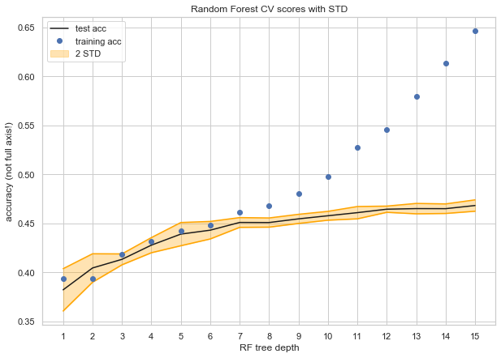

Model Refining
We tried many approaches to refine our data and our model. To list a few:
1. Implementing Logistic Regression, with and without cross validation. Using Logistic Regression
offered a very small increase over the naive accuracy of just predicting the most common category.
Even though the model is well suited to categorical data, it was not well suited to reconcile
the many features we included, even after being trained for 5 cross validations.
2. Implementing a Decision Tree. Again, even though this model is well suited for categorical
data, it didn't provide a substantial boost over the naive. This led us to look into
enhanced decision tree techniques, such as bagging, boosting, and random forest.
3. Implementing a Neural Network. Using 3 dense hidden layers of 100 nodes each, we were
able to get roughly 70% validation accuracy (which can be found in our notebooks).
But as our TF warned, this method is not well suited to the problem: between running the network,
accuracies would change dramatically.
4. Using latitude and longitude for K-Means Clustering to create pseudo neighborhoods, to
see if proximity affected the crime.
5. Using latitude and longitude to find actual Boston neighborhoods, to
see if neighborhood affected the crime.
6. Attempted to use PCA decomposition, but realized the problem did not need dimension reduction.
7. Testing for different maximum depths of a Random Forest.
Final Model
A Note About the Baseline Model: to have something to compare to, we looked at what
sort of accuracy we would want our model to beat. One way to think of it is the accuracy
we would get if responders guessed categories at random (this would be the accuracy given
no information about the past). Another way to think about it is the accuracy that a model
would produce if it just guessed the most common category 100% of the time (a very naive model).
We included both, and decided to compare our model to the latter, because it is more realistic
that we do have information about the past when making these decisions.
Our naive baseline accuracy was 20% and our model baseline accuracy was roughly 35.9%.

Set Up the Model: using the knowledge we gained from refining different models, all of which
can be found in the folder old_models. From this refining, we decided that the best model
would be a Random Forest with a maximum tree depth of 10 (so as to get the best test accuracy
without overfitting too much to the training set). We tested each of the hyper parameters
that RandomForestClassifier takes, but none helped us improve our accuracy.
Train and Evaluate: the model using the train and test sets. We chose to evaluate our model
based on accuracy because other methods didn't make sense. For example, we do care a lot
about the false negatives, since not all our categories have the same number of entries,
however, since this is not a binary outcome problem, it didn't make sense to use ROC scores.
After careful inspection of the class predictions and the predict_proba results, we decided
that the accuracy was a good measure of how well our model was performing.
Random Forest Accuracy, Training Set : 50.92%
Random Forest Accuracy, Testing Set : 46.11%
Analysis: as we can see above, our trained model (~50%) performed better than the
baseline model (35%). Although the model itself seems simple (we just trained a simple
random forest on our training data), it is in fact the result of many careful decisions.
The real model refining happened in the feature engineering and feature selection process.
Due to the nature of the data (crimes are hard to predict, it can hard to differentiate
between a crime that involves drugs or not, and the predictors that we chose cannot possibly
capture all the variability in the data), we are confident that our model's accuracy could
not significantly improve without drastic changes in the data inputs.
That being said, we wanted to create something that could be useful for a real-life situation,
i.e. how can we use the model we created to help emergency responders? The accuracy is pretty low,
meaning that given an emergency, the model would only be right about what sort of response was
needed 50% of the time. So we decided to use our model to help narrow down the types of responses
that could be needed to 2 instead of 5. We could use our model to tell responders "this emergency
likely involves drugs and weapons possessions", or "this emergency likely involves domestic issues and drugs".
This could help responders send different specialists to each situation, making their response more effective.
In order to accomplish this, we used predict_proba and chose the top two predicted classes
for each crime. We used the model trained on the training set, and tested it on the test
set to see how good of an accuracy we could get. We were hoping for an accuracy above 75%
for a reliable and applicable tool.
Percent of guesses that contained correct category: 74.2 %
Features: As a final useful piece of information, we looked at the most important predictors that
help us determine crime type. This could be useful for emergency officials to know for
preventative measures. As it turns out, the single most influential feature was the minimum
distance to a police station, which is useful to know if considering where to place a new police station.
Most important feature: 'police_min_dist'